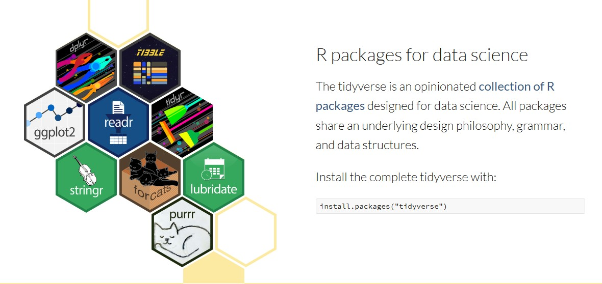
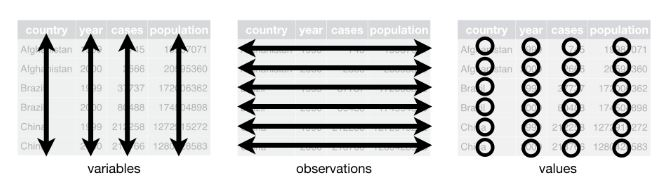

install.packages("tidyverse")
library(tidyverse)5 The tidyverse
🎯 Learning goals
1 The tidyverse
The tidyverse is a popular ecosystem of R packages designed for data science workflows. It is especially accessible for those just learning R because its functions are consistent and work well together.
The tidyverse includes packages for common tasks:
-
tibble: modern data frames (tibbles) that print nicely and work smoothly in pipelines -
readr,haven,readxl: importing data (CSV, SPSS/Stata/SAS, Excel) -
dplyr,tidyr: data wrangling (filtering, selecting, transforming, reshaping) -
stringr,forcats,lubridate: working with strings, factors, and dates/times -
purrr: functional programming helpers (iterate safely and clearly) -
ggplot2: plotting with the grammar of graphics

To install and load the core tidyverse packages:
For deeper reading and examples, I recommend Wickham et al’s book R for Data Science - it is just fantastic! 👏
1.1 Tibbles and tidy data
The tidyverse commonly uses tibbles, a modern variant of the data frame. Tibbles are simply a friendlier way to store and print tabular data.
Many tidyverse tools work best when your dataset follows tidy data principles:
- Columns: each column is one variable
- Rows: each row is one observation
- Cells: each cell is one value
Image: Tidy data structure (Source: R for Data Science, Figure 5.1)

Let’s check an example: We will use the WoJ dataset. It contains a quantitative survey of N = 1,200 journalists from five countries, collected via the World of Journalism study. The data is provided via the tidycomm package developed by Unkel et al.
First, we retrieve the data and save it as an object named data_woj. Next, we use the as_tibble() command which essentially prints our data in a nicer format. The data does not change, we just get additional information (such as the type of data it contains).
Make sure to have the tidycomm and the tidyverse package installed before running this command!
# we load the necessary packages
library(tidycomm)
library(tidyverse)
# loads the WoJ dataset shipped with tidycomm
data_woj <- tidycomm::WoJ
# we inspect the data
data_woj |>
as_tibble()# A tibble: 1,200 × 15
country reach employment temp_contract autonomy_selection autonomy_emphasis
<fct> <fct> <chr> <fct> <dbl> <dbl>
1 Germany Nati… Full-time Permanent 5 4
2 Germany Nati… Full-time Permanent 3 4
3 Switzerl… Regi… Full-time Permanent 4 4
4 Switzerl… Local Part-time Permanent 4 5
5 Austria Nati… Part-time Permanent 4 4
6 Switzerl… Local Freelancer <NA> 4 4
7 Germany Local Full-time Permanent 4 4
8 Denmark Nati… Full-time Permanent 3 3
9 Switzerl… Local Full-time Permanent 5 5
10 Denmark Nati… Full-time Permanent 2 4
# ℹ 1,190 more rows
# ℹ 9 more variables: ethics_1 <dbl>, ethics_2 <dbl>, ethics_3 <dbl>,
# ethics_4 <dbl>, work_experience <dbl>, trust_parliament <dbl>,
# trust_government <dbl>, trust_parties <dbl>, trust_politicians <dbl>If we only want to inspect the first rows in our data set, we can use the head() command:
# A tibble: 6 × 15
country reach employment temp_contract autonomy_selection autonomy_emphasis
<fct> <fct> <chr> <fct> <dbl> <dbl>
1 Germany Nati… Full-time Permanent 5 4
2 Germany Nati… Full-time Permanent 3 4
3 Switzerla… Regi… Full-time Permanent 4 4
4 Switzerla… Local Part-time Permanent 4 5
5 Austria Nati… Part-time Permanent 4 4
6 Switzerla… Local Freelancer <NA> 4 4
# ℹ 9 more variables: ethics_1 <dbl>, ethics_2 <dbl>, ethics_3 <dbl>,
# ethics_4 <dbl>, work_experience <dbl>, trust_parliament <dbl>,
# trust_government <dbl>, trust_parties <dbl>, trust_politicians <dbl>1.2 Pipes for readable workflows
A tidyverse workflow is typically written as a pipeline: you start with a dataset, then apply a sequence of data transformation steps.
In this tutorial, we use the base R pipe |>, which is built into modern R. You actually saw the pipe in the previous line of commands!
Conceptually, |> means:
“Take the object on the left and pass it as the first argument to the function on the right.”
In the code before, we…
- took the object
data_woj - pushed it into the pipe
|> - and then transformed it to a tibble using
as_tibble() - and then only inspect the first observations using
head()
If the pipe
|> does not work
The pipe |> requires R 4.1.0 or newer. If the code does not work, you have to update R.
You may also see the older tidyverse/magrittr pipe %>% in other tutorials and older code. It does the same basic thing: it takes the object on the left and passes it into the function on the right. The main differences are:
|>is base R (recommended for new code; no extra package needed).%>%comes from magrittr (loaded automatically viatidyverse).
Saving the result of pipes
Remember: If you want to keep a result, you must assign it to an object. For example, if we want to save data_woj as a tibble, we need to assign the result. For example, we could overwrite our existing object using the <- operator:
data_woj <- data_woj |>
as_tibble()What is in my pipe?
When you write pipelines, you only need to specify the input object once — at the beginning of the pipe. After that, R passes the result forward step by step. This usually makes code easier to read.
For example, this code is easy to understand:
This code does the same, but uses more separate lines and is harder to read - underlining why we prefer the |>:
2 Data management with dplyr
The tidyverse has a great package for data wrangling: dplyr.
Among the most important dplyr functions we will use in this class are:
-
select(): choose columns (variables) by name -
filter(): keep rows (observations) that match conditions -
arrange(): sort rows in ascending or descending order -
mutate(): create new columns or overwrite existing ones, for example usingif_else()andcase_when()
2.1 Select variables
You will frequently encounter large datasets with many variables. select() helps you narrow the dataset down to the columns you actually need.
Let’s reduce the object data_woj to the variables country and work_experience using select():
# select specific variables
data_woj_reduced <- data_woj |>
select(country, work_experience) The result looks like this:
data_woj_reduced |>
head()# A tibble: 6 × 2
country work_experience
<fct> <dbl>
1 Germany 10
2 Germany 7
3 Switzerland 6
4 Switzerland 7
5 Austria 15
6 Switzerland 27You can also remove columns using the - symbol. This means: “select everything except the column(s) named here”.
Another example: We deselect country and work_experience (without overwriting data_woj_reduced).
# A tibble: 6 × 13
reach employment temp_contract autonomy_selection autonomy_emphasis ethics_1
<fct> <chr> <fct> <dbl> <dbl> <dbl>
1 Nation… Full-time Permanent 5 4 2
2 Nation… Full-time Permanent 3 4 1
3 Region… Full-time Permanent 4 4 2
4 Local Part-time Permanent 4 5 1
5 Nation… Part-time Permanent 4 4 2
6 Local Freelancer <NA> 4 4 2
# ℹ 7 more variables: ethics_2 <dbl>, ethics_3 <dbl>, ethics_4 <dbl>,
# trust_parliament <dbl>, trust_government <dbl>, trust_parties <dbl>,
# trust_politicians <dbl>Remember: select() does not change your original dataset unless you assign the result with <-.
2.2 Filter observations
Before, select() selects (or deselects) columns (variables). In contrast, filter() selects (or deselects) specific rows (observations).
Let’s include those observations from data_woj_reduced where respondents have been working in journalism for longer than 10 years according to work_experience:
# A tibble: 6 × 2
country work_experience
<fct> <dbl>
1 Austria 15
2 Switzerland 27
3 Germany 24
4 Denmark 11
5 Switzerland 25
6 Denmark 25We can build more complicated filters. Let’s only include respondents with more than 10 years of experience and from Austria according to country:
# A tibble: 6 × 2
country work_experience
<fct> <dbl>
1 Austria 15
2 Austria 23
3 Austria 30
4 Austria 30
5 Austria 40
6 Austria 19For data wrangling, you will often use logical operators such as >, ==, &, and |.
Logical operators can be used to check whether certain statements are true/false, whether some values take on a certain value or not, etc. Since we won’t need this right away, I won’t go into details here - but we will need these later:
| Operator | Meaning |
|---|---|
| TRUE | indicates that a certain statement applies, i.e., is true |
| FALSE | indicates that a certain statement does not apply, i.e., is not true |
| & | connects two statements which should both be true (AND) |
| | | connects two statements of which at least one should be true (OR) |
| == | indicates that a certain value should equal another one |
| != | indicates that a certain value should not equal another one |
| > | indicates that a certain value should be larger than another one |
| < | indicates that a certain value should be smaller than another one |
| >= | indicates that a certain value should be larger than or equal to another one |
| <= | indicates that a certain value should be smaller than or equal to another one |
= vs. ==
In R, = and == do different jobs:
Use = to assign or set an argument value. With the following code, we ask R to find the maximum value of work_experience. In the function max, we set the argument x (the data) to work_experience and ignore missing values with na.rm (more on this later).
max(x = data_woj_reduced$work_experience, na.rm = TRUE)Use == to test equality (a logical comparison). With the following code, we ask R to find those cases in data_woj_reduced, where work_experience equals 20 (so respondents have worked for 20 years).
data_woj_reduced |>
filter(work_experience == 20)2.3 Arrange data
arrange() changes the order of observations (rows). By default, arrange() sorts in ascending order (smallest to largest; A to Z). To sort in descending order, use desc().
Let’s sort respondents by working experience (ascending):
# A tibble: 6 × 2
country work_experience
<fct> <dbl>
1 Switzerland 1
2 Switzerland 1
3 Switzerland 1
4 Switzerland 1
5 Denmark 1
6 Austria 1… and now descending:
2.4 Change values
Often you want to add new columns (e.g., compute a new variable) or recode existing values.
With mutate(), you can create new columns or overwrite existing ones.
A tidyverse-style approach for recoding is to combine mutate() with:
-
if_else()for simple two-category recodes -
case_when()for multiple conditions/categories
Important: case_when() does not “change values by itself” — it returns a new vector. You change a dataset only when you assign the result to a column (e.g., inside mutate()).
For example, we can create a new, categorical variable work_experience_cat that describes whether respondents have 5, 10 or more years of work experience. Note that we use the %in% operator to define whether work_experience takes on a specific value (e.g., 1:5, meaning 1, 2, 3, 4, or 5). All other values are set to NA (more on this later).
data_woj_reduced |>
mutate(
work_experience_cat = case_when(
work_experience %in% 1:5 ~ "max. 5 years",
work_experience %in% 6:10 ~ "6 to 10 years",
work_experience > 10 ~ "more than 10 years",
TRUE ~ NA_character_)) |>
head()# A tibble: 6 × 3
country work_experience work_experience_cat
<fct> <dbl> <chr>
1 Germany 10 6 to 10 years
2 Germany 7 6 to 10 years
3 Switzerland 6 6 to 10 years
4 Switzerland 7 6 to 10 years
5 Austria 15 more than 10 years
6 Switzerland 27 more than 10 years 💡 Take-Aways
🤓 Smart Hacks
Smart Hack 1: Selection helpers
So far, we’ve only worked with a few variables. With larger datasets, this quickly becomes impractical because you often need to select or transform many columns at once. The tidyverse solves this with tidy selections (via tidyselect): you can select columns based on their names, patterns, or properties, using so-called selection helpers.
Common helpers include:
-
contains(): selects columns whose names contain a specific string (e.g.,contains("_")) -
starts_with(): selects columns whose names start with a string (e.g.,starts_with("work")) -
ends_with(): selects columns whose names end with a string (e.g.,"experience") -
where(): selects columns for which a function returnsTRUE(often used to select by type, e.g.where(is.numeric))
For example, we can retrieve all variables containing the term “ethics”:
🎲 Quiz
📚 More tutorials on this
You still have questions? The following tutorials & papers can help you with that:
📌 Test your knowledge
Task 1 (Easy🔥)
Use the WoJ data. Find out how many variables describe journalistic trust!
Task 2 (Medium🔥🔥)
Using the same data, reduce the data set to journalists who…
- live in Austria
- are employed full-time or part-time
- have high trust in the government (values 4 or 5)
How many journalists fulfill these criteria?
Task 3 (Hard🔥🔥🔥)
Using the full WoJ data, save the data as woj_transformed and:
- create a new variable “ethics_cat” that takes on the value “high” if a journalists scores a 5 for any of the variables
ethics_1,ethics_2,ethics_3, orethics_4and “low” otherwise. - reduce the data set to journalists not working as freelancers (see variable
employment).
What is the mean amount of years, according to the variable work_experience, journalists in woj_transformed have worked?
From which country is the journalist with the most years of work experience?